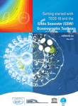
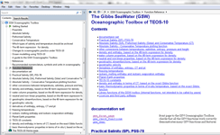
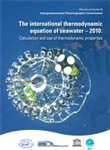
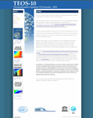

The Gibbs SeaWater (GSW)
|
A comprehensive collection of Matlab routines based on the International Thermodynamic Equation of SeaWater - 2010 (TEOS-10) |
|  |
Getting_started with TEOS-10 and the Gibbs Sea Water (GSW) Oceanographic Toolbox (pdf) |
|  | GSW Toolbox contents |
|  |
The TEOS-10 Manual (pdf) |
|  | The TEOS-10 web site |
|
|
|
| GSW licence |